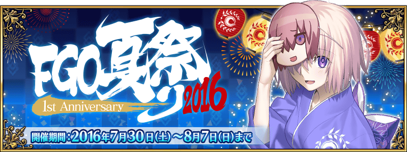
◆活動舉辦期間◆
2016年7月29日(五) 23:00～8月7日(日) 22:59
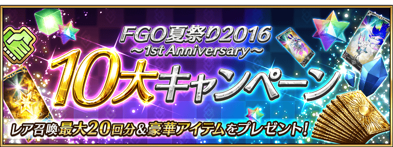
翻新後，1次聖晶石召喚消費的聖晶石個數，從現在的4個降到3個。
另外，10次召喚的消費個數也從40個降到30個。
◆翻新實施時間◆
2016年7月29日(五) 23:00～
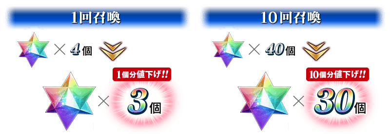
2016年7月29日(五)在Niconico生放送配信的特別節目「Fate/Grand Order 迦勒底放送局 Vol.03 FGO1周年前夜祭」進行的節目連動宣傳活動的報酬贈送！
※特別節目及連動宣傳活動已結束。
詳情請在 特設頁面 確認。
|
◆對象◆ ◆對應内容◆ ◆配布方法◆ ◆配布期間◆ |
 |
|
記念｢FGO夏祭2016～1st Anniversary～」舉辦實施特別的登入獎勵。 ◆宣傳活動舉辦期間◆ ※第1次的登入獎勵，從7月30日(六)AM3:00配發。 |
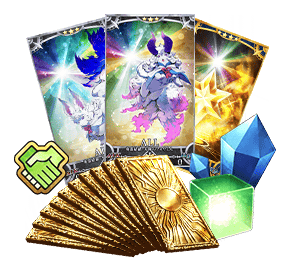 |
| 登入次數 | 禮物内容 |
|---|---|
| 第1次 | 1,000万QP |
| 第2次 | 友情點數×10万pt |
| 第3次 | 叡智的猛火 ALL★4(SR) 10枚 |
| 第4次 | 英霊結晶・太陽のフォウくんALL★3(ATK) 10枚 |
| 第5次 | 英霊結晶・星のフォウくんALL★3(HP) 10枚 |
| 第6次 | マナプリズム 100個 |
| 第7次 | 呼符 10枚（稀有召喚10次份） |

Servant及概念禮裝的所持欄位初期值，從現在的50開放上限全員開放到300！
另外，對目前為止Servant及概念禮裝的所持欄位，依照增加的欄位數返還贈送聖晶石。
※在所持欄位開放實施日後贈送，初次登入時給予至禮物箱。
◆所持欄位開放實施時間◆
2016年7月29日(五) 23:00～
為了「FGO夏祭り2016～1st Anniversary～」描繪的關鍵視覺主題做為概念禮裝以期間限定登場！
此概念禮裝，通過在迦勒底之門以期間限定出現的「FGO夏祭2016 記念關卡」就能獲得！
◆「FGO夏祭2016 記念關卡」舉辦期間◆
2016年7月29日(五) 23:00～8月7日(日) 22:59
◆｢FGO夏祭2016～1st Anniversary～」限定概念禮裝◆
| 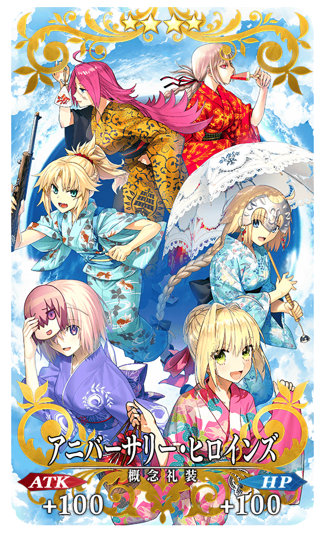 |
★★★★SR アニバーサリー・ヒロインズ ATK 100（最大：100） HP 100（最大：100） 技能 自身的攻擊力提升10%＆賦予每回合星星3個獲得狀態 |
一部份Servant的戰鬥動作及寶具演出翻新！
◆對象Servant◆
弗拉德三世
貞德
諸葛孔明〔埃爾梅羅II世〕
◆翻新實施時間◆
2016年7月29日(五) 23:00～

在進行Servant及概念禮裝的強化時，大成功(經驗值2倍加成)・極大成功(經驗值3倍加成)發生機率以期間限定變成3倍。
藉此機會強化喜愛的的Servant與概念禮裝吧！
◆舉辦期間◆
2016年7月29日(五) 23:00～8月7日(日) 22:59
以期間限定，在迦勒底之門內每星期出現的全部的曜日關卡AP消費量變成1/2！
◆宣傳活動舉辦期間◆
2016年7月29日(五) 23:00～8月7日(日) 22:59
◆對象關卡◆
宝物庫の扉を開け 初級、中級、上級、超級
弓の修練場 初級、中級、上級、超級
槍の修練場 初級、中級、上級、超級
狂の修練場 初級、中級、上級、超級
騎の修練場 初級、中級、上級、超級
術の修練場 初級、中級、上級、超級
殺の修練場 初級、中級、上級、超級
剣の修練場 初級、中級、上級、超級
種火集め＜槍・殺編＞ 初級、中級、上級、超級
種火集め＜剣・騎編＞ 初級、中級、上級、超級
種火集め＜弓・術編＞ 初級、中級、上級、超級
種火集め＜ランダム編＞ 初級、中級、上級、超級
【宝物庫の扉を開け、種火集め 關卡的難易度等】
| 難易度 | 推薦Lv | 消費AP | 通過報酬 |
|---|---|---|---|
| 初級 | 5 | 10→5 | マナプリズムｘ1 |
| 中級 | 10 | 20→10 | マナプリズムｘ2 |
| 上級 | 25 | 30→15 | マナプリズムｘ3 |
| 超級 | 40 | 40→20 | マナプリズムｘ4 |
【修練場 關卡的難易度等】
| 難易度 | 推薦Lv | 消費AP | 通過報酬 |
|---|---|---|---|
| 初級 | 10 | 10→5 | マナプリズムｘ1 |
| 中級 | 25 | 20→10 | マナプリズムｘ2 |
| 上級 | 40 | 30→15 | マナプリズムｘ3 |
| 超級 | 60 | 40→20 | マナプリズムｘ4 |
由於通過報酬每週都會重置，記得每週去通過關卡，持續入手報酬「マナプリズム」吧。
◆曜日關卡攻略的重點◆
請參考攻略推薦職階組成隊伍，挑戰曜日關卡！
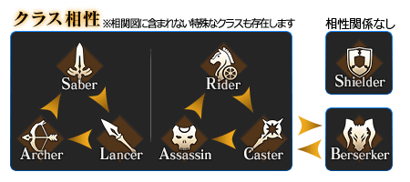
※曜日別關卡的詳情如下。曜日別關卡一覧
| 曜日 | 關卡名 | 做為戰利品獲得的主要道具 | 攻略推薦職階 |
|---|---|---|---|
| 月 | 弓の修練場
AP1/2
|
Archer的靈基再臨用道具、Archer的技能強化素材道具 | 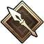 |
| 種火集め <槍・殺編> AP1/2
|
Lancer、Assassin、Berserker的經驗值卡 | ||
| 火 | 宝物庫の扉を開け
AP1/2
|
QP | |
| 槍の修練場
AP1/2
|
Lancer的靈基再臨用道具、Lancer的技能強化素材道具 | ||
| 種火集め <剣・騎編> AP1/2
|
Saber、Rider、Berserker的經驗值卡 | ||
| 水 | 狂の修練場
AP1/2
|
Berserker的靈基再臨用道具、Berserker的技能強化素材道具 | ALL |
| 種火集め <弓・術編> AP1/2
|
Archer、Caster、Berserker的經驗值卡 | ||
| 木 | 宝物庫の扉を開け
AP1/2
|
QP | |
| 騎の修練場
AP1/2
|
Rider的靈基再臨用道具、Rider的技能強化素材道具 | ||
| 種火集め <槍・殺編> AP1/2
|
Lancer、Assassin、Berserker的經驗值卡 | ||
| 金 | 術の修練場
AP1/2
|
Caster的靈基再臨用道具、Caster的技能強化素材道具 | |
| 種火集め <剣・騎編> AP1/2
|
Saber、Rider、Berserker的經驗值卡 | ||
| 土 | 宝物庫の扉を開け
AP1/2
|
QP | |
| 殺の修練場
AP1/2
|
Assassin的靈基再臨用道具、Assassin的技能強化素材道具 | ||
| 種火集め <弓・術編> AP1/2
|
Archer、Caster、Berserker的經驗值卡 | ||
| 日 | 宝物庫の扉を開け
AP1/2
|
QP | |
| 剣の修練場
AP1/2
|
Saber的靈基再臨用道具、Saber的技能強化素材道具 | ||
| 種火集め <ランダム編> AP1/2
|
Saber、Archer、Lancer、Rider、Caster、Assassin、Berserker的經驗值卡（隨機） | – |
強化Servant能力的特別關卡「Servant強化關卡」今回由於是1周年特別篇，合計14位為對象。
詳情請在這邊的告知確認。
◆舉辦期間◆
2016年7月29日(五) 23:00～
「聖杯轉臨」是對任意的Servant消費「聖杯」，提升Servant的Lv.上限功能。
在「聖杯轉臨」能提升的Lv.上限界限為Lv.100。使用1個「聖杯」時所提升的Lv.會隨著對象Servant的現在Lv.上限而變動。
「聖杯轉臨」在「Servant強化」內新追加的選項「聖杯轉臨」進行。
另外，進行「聖杯轉臨」，對象Servant必須到達靈基再臨最終階段，且提升Lv.至其上限。
◆功能追加日時◆
2016年8月5日(五) 23:00～

◆「FGO夏祭2016～1st Anniversary～特異點Pick Up召喚」期間◆
期間：2016年7月29日(五) 23:00～8月7日(日) 22:59
以期間限定，舉辦「FGO夏祭2016～1st Anniversary～特異點Pick Up召喚」！
在聖晶石召喚初登場的Servant「★5(SSR)李奧納多･達文西」以期間限定登場！
另外，記念Fate/Grand Order1周年，各特異點代表的Servant們以每日交替Pick Up。
詳情請在聖晶石召喚畫面左下的召喚詳細確認。
※李奧納多･達文西在Pick Up期間結束後，不會追加到故事召喚。
另外，跟‟夏祭”有關的概念禮裝「★5(SSR)足どりは軽やかに」「★5(SSR)王の相伴」「★4(SR)ゴールドフィッシュ・スクーピング 」「★3(R)ファイヤーフラワー」也以期間限定登場！
Pick Up期間中，期間限定Servant、Pick Up Servant、期間限定概念禮裝的出現機率提升！
10次召喚★4(SR)以上1張確定和★3(R)以上的Servant1位確定！
※★4(SR)以上確定包含Servant和概念禮裝。
※所謂「出現機率UP」意指比同稀有度的Servant及概念禮裝出現機率更高的設定。
| PickUp日 | 每日交替Servant Pick Up 時間表 |
|---|---|
| 7月29日(五)23:00～8月1日(一)22:59 | 李奧納多･達文西 |
| 8月1日(一)23:00～8月2日(二)22:59 | 李奧納多･達文西＆「特異點F 炎上汙染都市 冬木」Pick Up對象Servant |
| 8月2日(二)23:00～8月3日(三)22:59 | 李奧納多･達文西＆「第一特異點 邪龍百年戦争 奧爾良」Pick Up對象Servant |
| 8月3日(三)23:00～8月4日(四)22:59 | 李奧納多･達文西＆「第二特異點 永續狂氣帝國 羅馬七省」Pick Up對象Servant |
| 8月4日(四)23:00～8月5日(五)23:59 | 李奧納多･達文西＆「第三特異點 封鎖終局四海 歐開諾斯」Pick Up對象Servant |
| 8月5日(五)23:00～8月6日(六)22:59 | 李奧納多･達文西＆「第四特異點 死界魔霧都市 倫敦」Pick Up對象Servant |
| 8月6日(六)23:00～8月7日(日)22:59 | 李奧納多･達文西＆「第五特異點 北美神話大戰 合眾為一」 Pick Up對象Servant |
※請注意每日交替Pick Up的Servant會變更。
◆「特異點F 炎上汙染都市 冬木」Pick Up對象Servant◆

| 職階 | 稀有度 | Servant |
|---|---|---|
| Saber | ★★★★★ | 阿爾托莉亞・潘德拉剛 |
| Saber | ★★★★ | 阿爾托莉亞・潘德拉剛〔Alter〕 |
| Archer | ★★★★ | Emiya |
| Berserker | ★★★★ | 海克力斯 |
| Lancer | ★★★ | 庫・夫林 |
| Rider | ★★★ | 美杜莎 |
| Caster | ★★★ | 美狄亞 |
| Caster | ★★★ | 庫・夫林 |
※Pick Up期間中，阿爾托莉亞・潘德拉剛〔Alter〕(Saber)、庫・夫林(Caster)就算未通過特異點F也能入手。
◆「第一特異點 邪龍百年戦争 奧爾良」Pick Up對象Servant◆
| 職階 | 稀有度 | Servant |
|---|---|---|
| Ruler | ★★★★★ | 貞德 |
| Saber | ★★★★ | 齊格飛 |
| Saber | ★★★★ | 夏爾・德翁 |
| Saber | ★★★ | 吉爾・德・雷 |
| Caster | ★★★ | 吉爾・德・雷 |
| Berserker | ★★★ | 清姬 |
※Pick Up期間中，吉爾・德・雷(Caster)就算未通過第一特異點也能入手。
◆「第二特異點 永續狂氣帝國 羅馬七省」Pick Up對象Servant◆
| 職階 | 稀有度 | Servant |
|---|---|---|
| Saber | ★★★★★ | 阿提拉 |
| Saber | ★★★★ | 尼祿・克勞狄烏斯 |
| Saber | ★★★ | 蓋烏斯・尤利烏斯・凱撒 |
| Lancer | ★★★ | 羅慕路斯 |
| Rider | ★★★ | 布狄卡 |
※Pick Up期間中，尼祿・克勞狄烏斯就算未通過第二特異點也能入手。
◆「第三特異點 封鎖終局四海 歐開諾斯」Pick Up對象Servant◆
| 職階 | 稀有度 | Servant |
|---|---|---|
| Rider | ★★★★★ | 弗朗西斯・德雷克 |
| Rider | ★★★★ | 安妮・伯妮＆瑪莉・瑞德 |
| Caster | ★★★★ | 美狄亞〔Lily〕 |
| Archer | ★★★ | 尤瑞艾莉 |
| Archer | ★★★ | 大衛 |
| Lancer | ★★★ | 赫克特 |
※Pick Up期間中，美狄亞〔Lily〕就算未通過第三特異點也能入手。
◆「第四特異點 死界魔霧都市 倫敦」Pick Up對象Servant◆
| 職階 | 稀有度 | Servant |
|---|---|---|
| Saber | ★★★★★ | 莫德雷德 |
| Archer | ★★★★★ | 尼古拉・特斯拉 |
| Lancer | ★★★★ | 阿爾托莉亞・潘德拉剛〔Alter〕 |
| Caster | ★★★★ | 童謠 |
| Berserker | ★★★★ | 弗蘭肯斯坦 |
| Assassin | ★★★ | 亨利・傑基爾＆海德 |
| Caster | ★★★ | 馮・霍恩海姆・帕拉塞爾斯 |
| Caster | ★★★ | 查爾斯・巴貝奇 |
※Pick Up期間中，尼古拉・特斯拉、阿爾托莉亞・潘德拉剛〔Alter〕(Lancer)就算未通過第四特異點也能入手。
◆「第五特異點 北美神話大戰 合眾為一」 Pick Up對象Servant◆
| 職階 | 稀有度 | Servant |
|---|---|---|
| Rider | ★★★★★ | 女王梅芙 |
| Berserker | ★★★★★ | 南丁格爾 |
| Berserker | ★★★★★ | 庫・夫林〔Alter〕 |
| Saber | ★★★★ | 羅摩 |
| Lancer | ★★★★ | 神槍 李書文 |
| Caster | ★★★★ | 海倫娜・布拉瓦茨基 |
| Caster | ★★★★ | 湯瑪斯・愛迪生 |
| Archer | ★★★ | 比利小子 |
| Caster | ★★★ | 傑羅尼莫 |
※Pick Up期間中，女王梅芙、庫・夫林〔Alter〕、神槍 李書文、湯瑪斯・愛迪生就算未通過第五特異點也能入手。
Pick Up期間中、在迦勒底之門出現李奧納多･達文西體驗關卡！
※通過「特異點F 炎上汙染都市 冬木」後開放。
※在體驗關卡中並無劇本。
迎接「★5（SSR）李奧納多･達文西」做為支援成員，挑戰期間限定的關卡！
別錯過體驗Servant技能與寶具的機會！
|
◆李奧納多･達文西體驗關舉辦期間◆ ◆關卡通過報酬◆ |
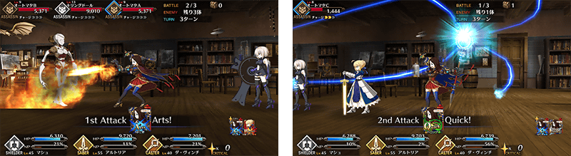
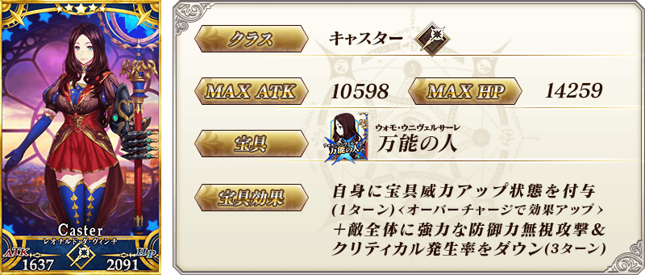
| 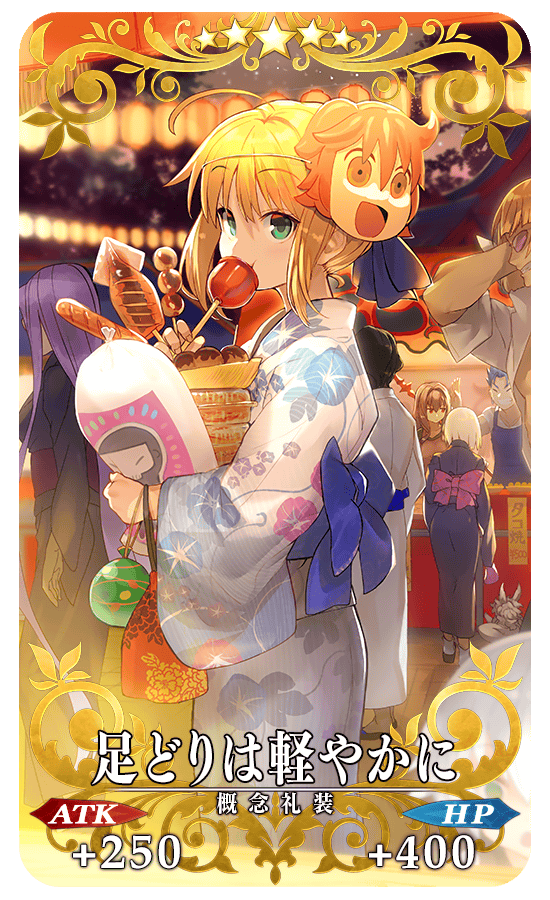 |
★★★★★SSR 足どりは軽やかに ATK 250（最大：1000） HP 400（最大：1600） 技能 自身的星星集中度提升400%＆Arts卡性能提升10% |
| 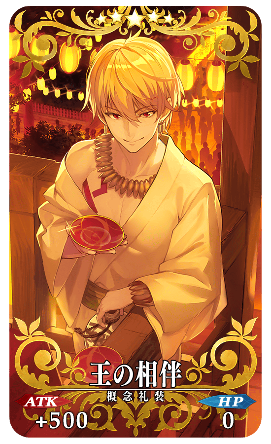 |
★★★★★SSR 王の相伴 ATK 500（最大：2000） HP 0 技能 自身的Buster卡性能提升10%＆NP以50%累積狀態開始戰鬥 |
| 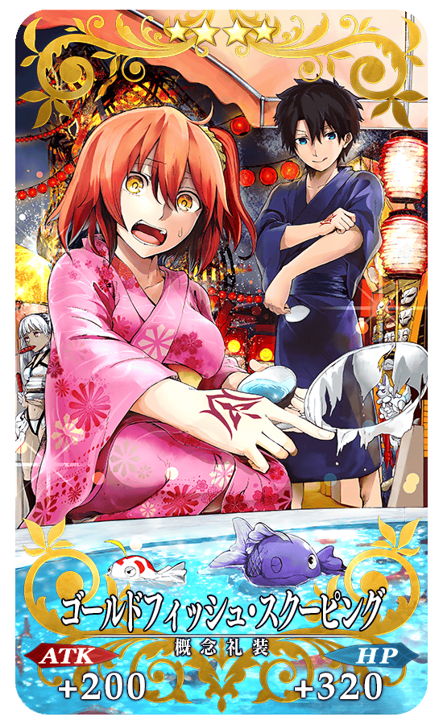 |
★★★★SR ゴールドフィッシュ・スクーピング ATK 200（最大：750） HP 320（最大：1200） 技能 對自身賦予必中狀態＆Buster卡性能提升8% |
| 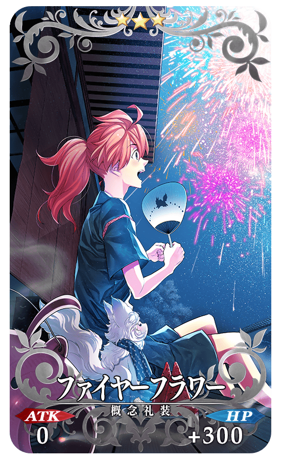 |
★★★R ファイヤーフラワー ATK 0 HP 300（最大：1500） 技能 自身的星星發生率提升5%＆Critical威力提升5% |